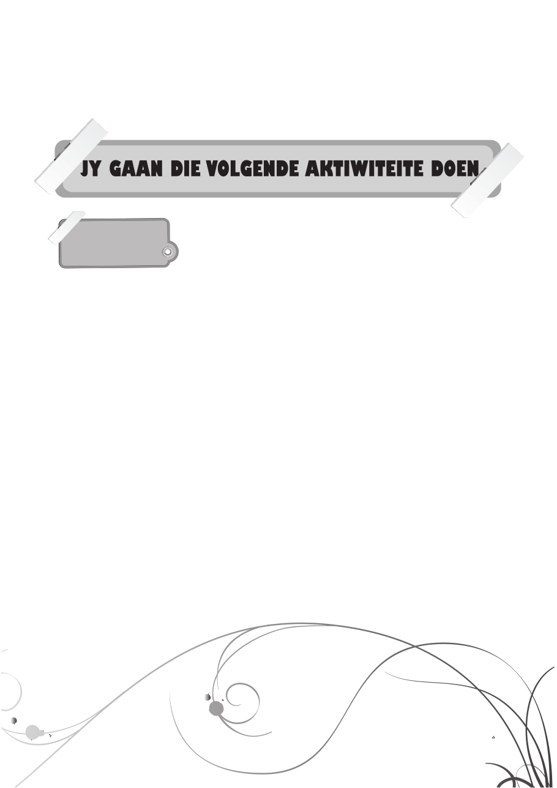

18
’n Basiese inskrywing soos bostaande kan die volgende elemente bevat. (Onthou net daar is geen reg of verkeerd by die skryf van ’n joernaal nie.) Hierdie is slegs wenke:• ’n Beskrywing van iets wat gebeur het en die emosies wat daaraan gekoppel was.• Enige ekstra inligting wat uitstaan en by die gebeurtenis aansluit.• Nabetragting van wat gebeur het.• Goed wat gedoen/onthou moet word.
My Joernaal
ktiwiteit eenHierdie aktiwiteit gaan as die skriftelike taak vir hierdie kwartaal dien en tel 70 punte. Jou onderwyser sal presies aan jou verduidelik wat van jou verwag word; let dus goed op. In kort kom dit daarop neer dat ons wat jy in hierdie eenheid geleer het, prakties wil toepas. Ons wil spesifiek na jou skryfvaardighede en ook jou kreatiwiteit kyk.
Genoeg gepraat – hier is die opdrag:
Skryf jou eie joernaal wat uit ’n minimum van 14 inskrywings en ’n maksimum van 21 inskrywings moet bestaan. Jou joernaal gaan in ’n tydkapsule op die skoolvierkant begrawe word en eers weer oor 100 jaar uitgehaal word. Wat dan? Elke joernaal gaan dan aan ’n graad 9-leerder van daardie jaar gegee word om te bestudeer. Hopelik sal die leerder eerstehands kan ervaar hoe iemand van sy/haar ouderdom 100 jaar gelede geleef het. Cool né! Dalk is ’n iPod dan in ’n museum?
Hier is ’n paar vereistes waaraan jy moet voldoen:1. Voorsien jou joernaal van ’n titel. Iets soos Die Avonture van ...2. ’n Dagboekinskrywing mag nie langer as 150 woorde wees nie.3. Die joernaal moet met die hand geskryf word.4. Dateer elke inskrywing.5. Moenie probeer verduidelik wat byvoorbeeld ‘n iPod is nie.6. Dit hoef nie ’n joernaal oor jou eie lewe te wees nie. Skep ’n fiktiewe karakter, maar laat die karakter in die werklikheid leef.7. Jy mag ook tekeninge en/of sketse maak.
Jy sal na aanleiding van die volgende kriteria geasseseer word:• Die geloofbaarheid van jou joernaalinskrywings.• Die logiese aanbieding van jou joernaal. Met ander woorde: Gebeure en dae volg mekaar logies op.• Leesbaarheid (taalgebruik, skryfstyl, ensovoorts).• Kreatiewe denke.